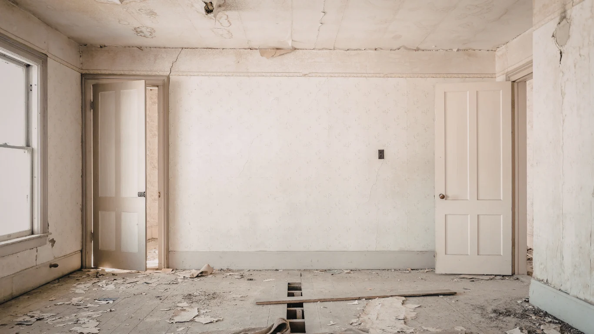

Brand- und Wasserschadensanierung · Düsseldorf
Nach dem Schaden
wieder zu Hause.
Wir sanieren Brand- und Wasserschäden. Von der ersten Schadenaufnahme bis zu Räumen, die Sie wieder nutzen können.
Ein klarer Weg durch die Sanierung.

01 / Unsere Leistungen
Sanierung von Gebäude
und Inventar.
Ob Wasser, Feuer oder Folgeschäden: Wir stimmen die Sanierung auf den Schaden und die betroffenen Räume ab.

Ein Rohrbruch oder eindringendes Wasser kann Böden, Wände und Inventar beschädigen. Wir nehmen den Schaden auf und stimmen die erforderlichen Maßnahmen mit Ihnen ab.
Leistung kennenlernen
Ruß, Rauch und Löschwasser hinterlassen unterschiedliche Schäden. Wir erfassen die betroffenen Bereiche und planen die Sanierung von Gebäude und Inventar.
Leistung kennenlernen02 / So arbeiten wir
Aus vielen Aufgaben
wird ein klarer Ablauf.
Eine Sanierung betrifft mehr als Wände und Böden. Wir sorgen dafür, dass Sie wissen, was als Nächstes passiert.
INTEGRA kennenlernenAufnehmen und klären
Wir erfassen den Schaden und beurteilen, welche Maßnahmen erforderlich sind.
Abstimmen und planen
Sie erhalten eine nachvollziehbare Grundlage für Leistungen, Kosten und den weiteren Ablauf.
Sanieren und begleiten
Unsere Projektleitung koordiniert die Arbeiten und hält Sie über den Sanierungsstand auf dem Laufenden.
Wiederherstellen
Wir begleiten die Wiederherstellung der betroffenen Räume bis zum Abschluss der Arbeiten.
03 / Das Unternehmen
Fachgerechte Arbeit.
Persönlich begleitet.
INTEGRA ist in Düsseldorf zu Hause. Wir begleiten die Sanierung von Gebäuden und Inventar nach Brand- und Wasserschäden.
Unsere Projektleitung verbindet die einzelnen Gewerke und gibt Ihnen Orientierung. Mit abgestimmten Abläufen und einem nachvollziehbaren Blick auf Zeit und Kosten.
Mehr über INTEGRADer nächste Schritt